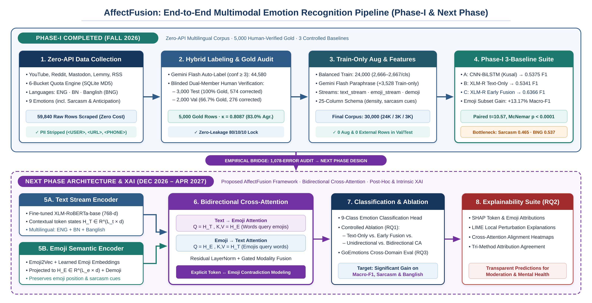
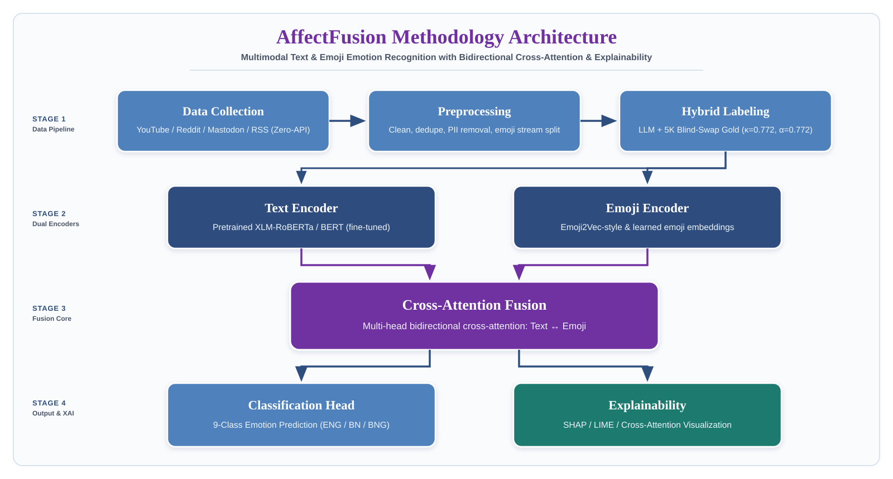

Dual-Stream Methodology & 25-Column Schema
Each post is decomposed into clean text, normalized Unicode emoji glyphs, CLDR natural-language demoji descriptions, and quantitative affective cues—powering both completed Phase-I baselines and our Next Phase cross-attention encoder.
Plate ITap to zoom ↗

AffectFusion System Architecture
Connects completed Phase-I benchmarks to Next Phase Cross-Attention Fusion & XAI.
Plate IITap to zoom ↗

End-to-End Research Methodology
Dual-modality harvesting, stream alignment, fusion modeling, and human-grounded evaluation.
Plate IIITap to zoom ↗

Operational Execution Workflow
Sequential pipeline verifying zero-leakage handoffs across every stage.
Unified 25-Column Parquet Schema
Verified 100% identical Arrow/Parquet physical schema across train (24K), validation (3K), and test (3K):
← Swipe table →
| Group | Columns |
|---|---|
| IDs | row_id, platform |
| Streams | raw_text, text_stream, emoji_stream, demoji_text, baseline_input |
| Labels | label, label_id (0–8), language_tag, language_id (0–2) |
| Density | has_emoji, emoji_count, unique_emoji_count, emoji_density, text_length, word_count |
| Cues | exclamation_count, question_count, uppercase_ratio, has_sarcasm_emoji_cue |
| Audit | ai_confidence, is_augmented, is_external_train_only, is_human_verified |